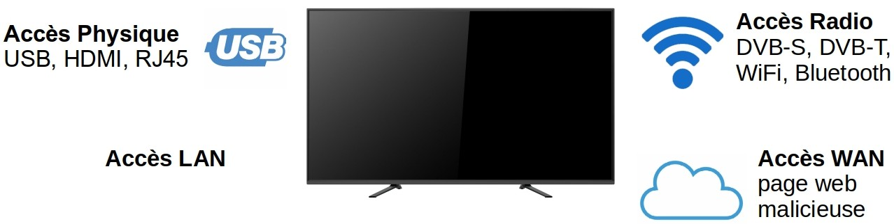

Sécurité des Smart TVs : DVB-T et HbbTV
Sec Sdf
Alan Camilo Herrera
Kevin Phouratsamay


Interfaces des Smart TVs vulnérables par type d'accès
Deux objectifs possibles d'une attaque sur les Smart TVs :
- Accéder à des données confidentielles stockées sur la Smart TV
- Utiliser la Smart TV compromise pour une attaque plus large
Types d'attaques network level + DVB-T stream level
Pour toi Kevin !